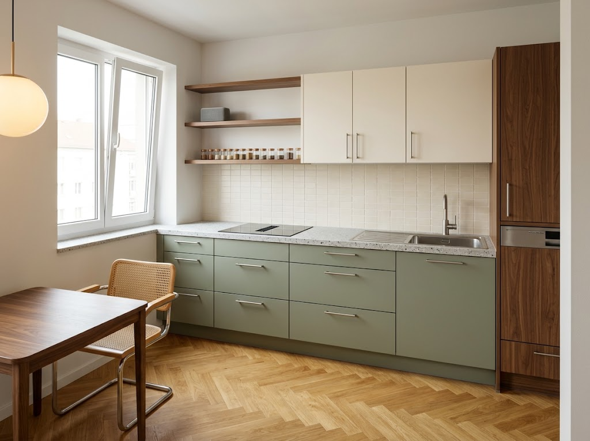
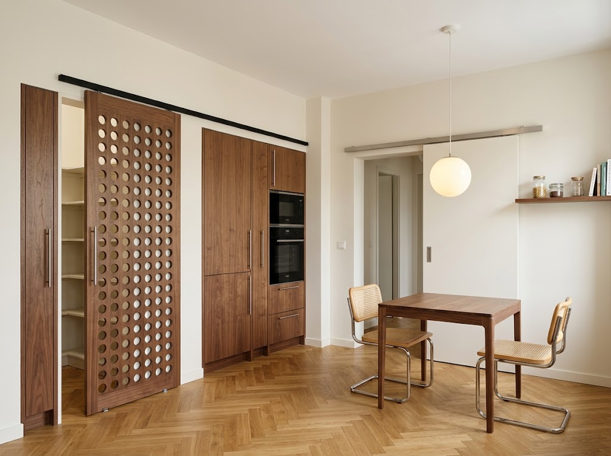

Rendus cuisine
Rendus Gemini du plan retenu, variante B (bas sauge, colonnes noyer). Une vue par conversation Gemini : joindre les images dans l'ordre indiqué, puis coller le prompt.
Vue 1 — depuis l'entrée, vers le nord-ouest
Fenêtre, rangée nord, colonne lave-vaisselle.

Pièces jointes, dans cet ordre

Voir le prompt
Photorealistic interior photograph of an existing, fully specified small kitchen. This is an architectural visualization of a fixed design, NOT a design exercise. STRICT RULES - The attached drawings are the authoritative specification: image 1 is the floor plan (north at the top, dimensions in cm), image 2 is the elevation of the north wall, image 3 is the section looking west. Image 4 is the floor material. - Reproduce the layout exactly: same elements, same order, same widths, heights and positions as in the drawings and the list below. Do not add, remove, move, mirror, swap, resize or merge any element. Do not "improve" the design. - Anything not listed below does not exist in this room. - The labels, dimension lines, hatching, circled numbers and flat colours of the drawings are annotations only: never render them. - Your only freedom is materials rendering, light and photographic realism. ROOM Rectangular room, 3.23 m west–east × 2.52 m north–south, ceiling 2.50 m, flat white ceiling, walls warm off-white (#f4f0e9). Floor: honey oiled oak herringbone parquet, exactly like image 4. CAMERA Standing in the entrance doorway in the middle of the SOUTH wall (plan position x = 267 cm, y = 240 cm), eye height 1.60 m, 20 mm lens, level, no tilt, no fisheye. Looking toward the north wall, slightly to the left. In frame: the north wall on the right two-thirds, the west wall with the window on the left. The east wall is behind the right edge of the frame and is NOT visible. NORTH WALL — one straight run, from the west corner (left) to the right, depth 62 cm, worktop at 91 cm, recessed plinth 15 cm. Exactly these 5 units, in this order: 1. 42 cm drawer unit, against the west wall (3 drawers); 2. 60 cm unit under a black glass induction hob with an integrated downdraft vent strip in its centre (below it: one shallow drawer, then one deep pan drawer). NO cooker hood, NO extractor, NO cabinet above the hob; 3. 80 cm drawer unit (3 drawers); 4. 60 cm sink unit (one full-height front). On it, a one-piece brushed stainless steel sink 86 cm wide: square bowl centred on this unit, clearly visible ribbed stainless draining board on its LEFT, flush in the worktop, that overlaps 28 cm onto the 80 cm drawers. Tall brushed-steel faucet behind the bowl. NO dish rack anywhere; 5. 60 cm tall column in walnut, full height to 2.38 m: a small drawer at the bottom (15–38 cm), a raised integrated dishwasher with a walnut panel front (38–120 cm), then walnut doors up to 2.38 m. Total length of the worktop: 2.42 m (units 1 to 4). The walnut column stands at the right end of the run; a narrow wall return is next to it. Base fronts (units 1–4): flat slab, muted sage green (#8d9b80), long slim brushed stainless steel bar handles. Worktop: 4 cm light grey terrazzo (grey, charcoal and white chips on a pale grey base). Backsplash: small rectangular glazed tiles, warm off-white, from the worktop (91) to 1.48 m, and up to 1.62 m under the shelves. WALL CABINETS AND SHELVES on the north wall, all tops aligned at 2.38 m, bare wall above up to the ceiling (no filler, no cornice): - above units 1 and 2 (the first 1.02 m from the west wall): NO cabinet, only two open walnut shelves, 30 cm deep, running from the west wall to the first wall cabinet. Lower shelf at 1.62 m with a row of small glass spice jars; upper shelf at 2.00 m with one compact fabric Bluetooth speaker; - above unit 3: one 80 cm wall cabinet, 35 cm deep, from 1.48 to 2.38 m, 2 doors; - above the sink unit: one 60 cm wall cabinet, from 1.48 to 2.38 m, doors; Wall cabinet fronts: flat, cream (#f1ede5), same bar handles. WEST WALL (left of frame): a single window, 1.42 m wide, sill at 1.06 m (15 cm above the worktop), head at 2.15 m. The sill is HIGHER than the worktop: 15 cm above the worktop surface, never at or below it. Its north edge is 58 cm from the north wall, so the worktop corner almost meets the window. Two inward-opening casements, white frames, daylight. NO radiator: plain wall under the window. FOREGROUND, lower left: the corner of a SQUARE dining table 80 × 80 cm (all four sides equal, not rectangular), height 75 cm, corners rounded (radius 12 cm), walnut top, slim legs, and one chair on its east side (chrome tubular cantilever frame, cane seat and back). The table stands 93 cm in front of the worktop front. LIGHT: soft natural afternoon daylight from the window, plus the lower edge of a warm opal glass globe pendant above the table at the top left. AVOID: window sill lower than the worktop, radiator, rectangular table, cooker hood, wall cabinet or chimney above the hob, dish rack, kitchen island, extra window, extra units, open shelves anywhere else, open-plan space, upper cabinets reaching the ceiling, glossy fronts, gold or black handles, plants, clutter, people, text, dimension lines or watermarks.
Vue 2 — depuis la fenêtre, vers le sud-est
Colonnes noyer, porte claustra, entrée, table.

Pièces jointes, dans cet ordre
Voir le prompt
Photorealistic interior photograph of an existing, fully specified small kitchen. This is an architectural visualization of a fixed design, NOT a design exercise. STRICT RULES - The attached drawings are the authoritative specification: image 1 is the floor plan (north at the top, dimensions in cm), image 2 is the elevation of the east wall (north on the left), image 3 is the section looking south (east on the left). Image 4 is the floor material. - Reproduce the layout exactly: same elements, same order, same widths, heights and positions as in the drawings and the list below. Do not add, remove, move, mirror, swap, resize or merge any element. Do not "improve" the design. - Anything not listed below does not exist in this room. - The labels, dimension lines, hatching, circled numbers, dashed outlines and flat colours of the drawings are annotations only: never render them. In image 2 the claustra door is drawn in three positions; render it in ONE position only, described below. - Your only freedom is materials rendering, light and photographic realism. ROOM Rectangular room, 3.23 m west–east × 2.52 m north–south, ceiling 2.50 m, flat white ceiling, walls warm off-white (#f4f0e9). Floor: honey oiled oak herringbone parquet, exactly like image 4. CAMERA Standing in front of the window, near the north-west corner (plan position x = 60 cm, y = 90 cm), eye height 1.60 m, 20 mm lens, level, no tilt, no fisheye. Looking diagonally into the south-east corner of the room. GEOMETRY: the east wall and the south wall are two DIFFERENT walls at 90° to each other; their vertical corner is at the CENTRE of the image. The east wall recedes toward the left, the south wall recedes toward the right, both in two-point perspective. The oven column touches this corner. The dining table is in the middle-right foreground. EAST WALL (left of frame), seen from left (north) to right (south). All tall fronts in one flat plane, tops at 2.38 m, bare wall above up to the ceiling: 1. at the far left edge only: the side of ONE 60 cm walnut column that stands on the NORTH wall, at 90° to the east wall (the end of the north run). There is NO wall of tall cabinets on the left and nothing else in line with the claustra door; 2. the pantry opening, 60 cm wide, CLOSED by a sliding claustra door 62 cm wide × 2.37 m high: walnut frame filled with a regular grid of round openwork holes (1970s claustra), pale pantry shelves faintly visible through the holes, one vertical brushed-steel pull at 1.05–1.30 m. It hangs from a slim, straight, horizontal black track fixed to the CEILING at 2.45 m. The track runs continuously along the whole east wall, 1.93 m long, from the pantry opening all the way to the south-east corner, a few cm in front of the cabinet fronts, passing above the fridge, the 12 cm column and the oven column. No rail on the wall face above the cabinets. One small floor guide; 3. a 59 cm integrated fridge column, plain walnut doors, handle on the left (door hinged on the south side); 4. a 12 cm narrow pull-out column, walnut; 5. a 59 cm oven column, flush against the south wall: two walnut drawers at the bottom, a built-in oven in black glass and stainless steel from 88 cm, a built-in microwave above it, a walnut door at the top. Long slim brushed stainless steel bar handles, walnut with a straight, calm grain. SOUTH WALL (right of frame), from left (east) to right (west): 1. right of the oven column, a 17 cm wall pier with a light switch at 1.10 m, flush with the south wall (no projecting pilaster, no return); 2. the entrance opening, 78 cm wide × 2.04 m high, fully open onto a hallway (the hallway wall is visible beyond); 3. above the opening and further right, a brushed-steel sliding door track fixed on the kitchen side at 2.12–2.22 m, 1.68 m long; 4. the sliding entrance door, 82 × 210 cm, flat panel painted the same off-white as the walls, flush recessed pull, parked OPEN on the right of the opening, in front of the plain wall, partly hidden behind the table; 5. further right, beyond the parked door, one SHORT open walnut shelf, a single plain plank 25 cm deep, 1.40 m long, at 2.00 m, with a few jars and books. It starts at the west wall (right edge of the frame) and STOPS 4 cm before the right edge of the parked door. There is NOTHING above the entrance opening and NOTHING above the parked door except the brushed-steel track: the shelf never passes over the door or the opening. Nothing else on the south wall. FOREGROUND, middle right: a SQUARE dining table 80 × 80 cm (all four sides equal, not rectangular), height 75 cm, corners rounded (radius 12 cm), walnut top, slim legs; it stands 17 cm from the south wall. Exactly two chairs facing each other across the table, one on its left (east) side and one on its right (west) side, both parallel to the south wall (chrome tubular cantilever frame, cane seat and back). A warm opal glass globe pendant hangs exactly above the CENTRE of the table. LIGHT: soft daylight coming from behind the camera (window on the west wall), plus the warm glow of the pendant. AVOID: a shelf above the entrance opening or above the sliding door, a shelf running across the whole south wall, east and south walls in the same plane, entrance door on the east wall, a wall of tall cabinets on the left, rectangular table, radiator, hinged pantry door, open pantry, gaps between the tall columns, cabinets or filler up to the ceiling, extra units on the south wall, cooker hood, kitchen island, window on the east or south wall, a third chair, open-plan space, glossy fronts, gold or black handles, plants, clutter, people, text, dimension lines or watermarks.
Message de correction
À adapter : remplacer le passage entre < > par l'écart constaté.
Sur ce compte, Gemini refuse de retoucher une image : corriger le prompt et regénérer dans une nouvelle discussion.
The layout is wrong. Keep the camera, light and materials, but fix only this: <écrire l'écart, ex. "there must be NO wall cabinet above the hob, only two open shelves" / "the fridge is left of the oven, not right">. Follow the attached plan exactly; do not change anything else.